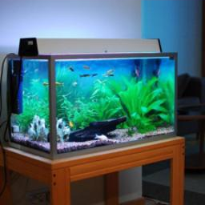
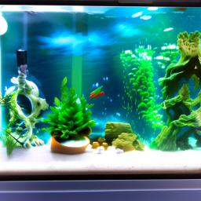

01 / MULTIMODAL LEARNING
Reconstructing images
from brain signals.
Master’s thesis · Sapienza University of Rome
Can a model reconstruct visual content from the EEG of someone it has never trained on? I combined a LoRA-adapted REVE encoder, learned shared/private representations, and diffusion-based image generation.


Selected thesis examples using aggregated EEG responses. Viewpoint and fine details can differ.
Method & evaluation
The learned decomposition improved CLIP two-way identification from 58.87% to 87.58% against the residual-decomposition baseline on the same 100 targets. On the full 1,654-target set, the base model reached 87.60% for one held-out participant, using aggregated responses.
These are pairwise identification scores, not 1,654-way classification accuracy. Evaluation categories occur during training. Figures and scores come from the thesis; the consolidated public implementation has not been rerun to reproduce the historical results.